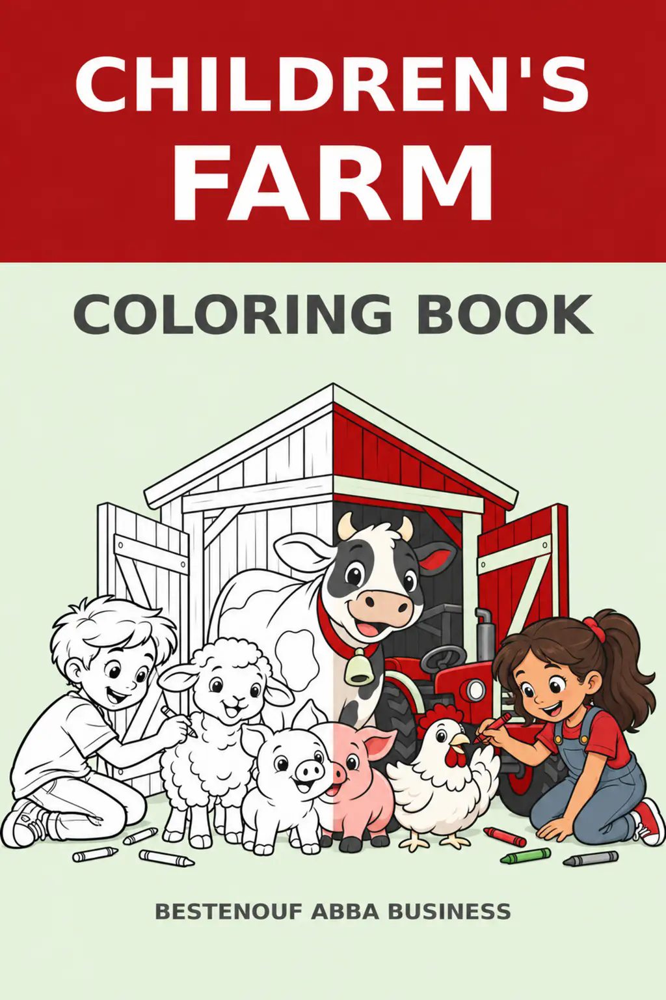

← All books

CHILDREN’S FARM COLORING BOOK
$15
Farm life gives children a world of shapes, animals, tools, and stories to explore. Children’s Farm Coloring Book invites young artists to color friendly animals, tractors, barns, and familiar farm scenes while they strengthen focus, observation, creativity, and fine-motor confidence. Clear, approachable illustrations encourage children to make their own color choices and complete each picture with pride. Families, teachers, and caregivers can use the book for quiet time, classroom enrichment, travel, or shared creative play.
Purchase activates after the downloadable coloring-book file is connected.